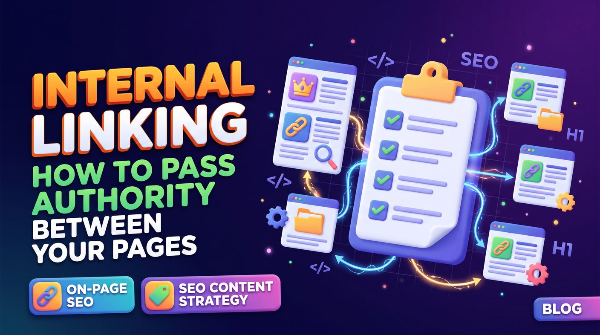

Internal linking connects related pages on your own website so visitors and search engines can discover them and understand how they fit together. Identify your priority pages, group content into topic clusters, link from relevant articles using descriptive anchor text, and audit orphan pages and broken links regularly. Links help discovery and context; they cannot guarantee a fixed amount of authority or any ranking.
- What is internal linking in SEO?
- What does passing authority between pages mean?
- Why internal linking matters for business websites
- Internal linking vs external linking
- How to build an effective internal linking structure
- How to pass link equity to your most valuable pages
- Internal linking mistakes to avoid
- How to audit internal links on your website
- Building an internal linking strategy for SEO content
- Example: an internal linking structure for an SEO website
- Internal linking checklist
- Conclusion: make every important page easier to discover
What is internal linking in SEO?
An internal link is a hyperlink that connects one page on a website to another page on the same website. Internal links appear in navigation menus, breadcrumbs, contextual links within paragraphs, related-article sections and other website elements.
An article explaining keyword research, for example, could link to a service page offering keyword research. A technical SEO guide could link to a related article on Core Web Vitals. These connections help readers move naturally between related topics.
Internal links serve several purposes:
- Help search engines discover pages and follow links across your website.
- Help users navigate to relevant information and services.
- Communicate relationships between related pages.
- Help search engines understand which pages are important within your site structure.
- Distribute link equity across eligible pages and links.
Internal linking is an important part of on-page SEO, but plan it around the needs of users rather than adding links just to raise the link count. Our on-page SEO checklist covers where internal links fit among the other page-level checks.
What does passing authority between pages mean?
In SEO, people use the terms link equity or link authority to describe the value links can help convey between pages. When one page links to another, the link can help search engines discover the destination and understand its relationship to the linking page.
External backlinks can contribute to a page's authority signals, and internal links connect that page to other relevant content on your site. A useful article that has earned backlinks from other websites may link to a related service page, helping users and search engines discover that service. (Earning those backlinks is the job of off-page SEO and link building.)
However, internal linking does not transfer a fixed, measurable amount of authority that you can calculate by counting links. Google's systems use many signals, and the effect of an internal link depends on context, page accessibility, link placement, relevance and more.
The practical goal is a website where important pages are easy to find and links help explain how the content fits together.
Why internal linking matters for business websites
1. Helps search engines discover important pages
Search engines use links to discover URLs and navigate websites. A page with no internal links pointing to it may be harder to find through normal crawling, especially if it is not in a sitemap or linked from another accessible resource.
Make sure your important service pages, category pages and educational guides can be reached through relevant internal links.
2. Highlights your most important pages
Not every page has equal business value. A service page that generates enquiries is usually more important than an older article that no longer matches what you sell.
Use contextual links from related articles to help visitors reach your main commercial pages, and make sure each link is a natural next step rather than an interruption.
3. Improves user navigation
Visitors rarely follow the journey a site owner expects. Someone who arrives through an informational blog post may later need a service, pricing details or a more advanced guide.
Relevant internal links let users continue their journey without going back to Google to search for every related topic.
4. Clarifies topical relationships
Links between related articles and service pages create a clearer content structure. An SEO website might connect articles on keyword research, search intent, on-page optimisation and content planning to the relevant services.
This makes the relationships between topics easier for visitors to follow and helps search engines interpret the structure of your site.
5. Supports conversions
Internal linking can guide readers from learning about a problem, to understanding possible solutions, to evaluating your services.
A helpful educational article may link to a relevant service page, while a service page can link to case studies, FAQs or guides that answer common customer questions. These links should help visitors make informed decisions, not pressure them into acting.
Internal linking vs external linking
Understanding the difference helps you build a balanced linking strategy.
| Feature | Internal links | External links |
|---|---|---|
| Destination | Another page on the same website | A page on a different website |
| Main purpose | Navigation, discovery and connecting related content | Referencing external resources and earning links from other sites |
| Control | You generally control the links on your own website | Control depends on whether you link out or another site links to you |
| SEO contribution | Supports crawling, context and internal link equity distribution | Backlinks can contribute to authority signals; outbound links can provide useful references |
Both types of links have a role. Internal linking cannot replace the value of earning relevant, trustworthy backlinks, and backlinks cannot make up for a confusing internal structure. See our backlinks guide for 2026 for the external side.
How to build an effective internal linking structure
Step 1: Identify your most important pages
Start by identifying the pages that matter most to your business and audience. These might include your homepage, primary service pages, key category pages, product pages and comprehensive educational resources.
For an SEO agency in Sri Lanka, the priority pages might include:
- The main SEO services page.
- The on-page SEO service page.
- The keyword research service page.
- The SEO content strategy page.
- Relevant technical SEO and local SEO pages.
Prioritise pages by business importance, relevance, existing performance and role in your customers' journeys. Do not automatically point every internal link at the homepage.
Step 2: Group pages by topic
Organise related pages into topic clusters. A cluster typically has a broad guide or central page supported by more specific articles and resources.
An on-page SEO cluster, for example, could include:
- A central on-page SEO service page.
- An on-page SEO checklist.
- A title tags and meta descriptions guide.
- An internal linking guide (this article).
- A keyword research and search intent article.
Link these pages when the connection is useful. The central service page helps visitors understand the service, while supporting articles answer specific questions and send readers to the next relevant resource.
Step 3: Link from relevant articles to important pages
Contextual links placed naturally in the main content are especially useful because the surrounding text explains why the destination is relevant.
A blog post about optimising website pages might include a sentence such as:
Businesses looking to improve page-level optimisation can explore our on-page SEO services for further guidance.
The link works because it connects the article to a related service. Avoid inserting links where the destination does not help the reader.
Step 4: Use descriptive anchor text
Anchor text is the clickable text of a hyperlink. Good anchor text gives readers a clear idea of what they will find when they follow the link.
- Descriptive: "our SEO content strategy guide".
- Less informative: "click here".
- Potentially unnatural if repeated excessively: "best SEO company in Sri Lanka" on every page.
Use natural variations that reflect the destination page's subject. Exact-match keyword anchors are not required for every link, and repeating them excessively can make your content look manipulative.
Step 5: Connect supporting articles to each other
Do not limit internal links to service pages. Supporting articles can link to each other when they address related questions.
An article about keyword research may link to a guide on search intent. The search intent article may link back to keyword research and forward to a content strategy guide.
These connections help readers explore a subject in more depth and create a coherent structure across your content library.
Step 6: Keep important pages within a reasonable click depth
Click depth is how many clicks it takes to reach a page from a starting point, usually the homepage. Important pages should be easy to reach through clear navigation and relevant internal links.
If a high-value service page is buried several layers deep with no links from related content, review whether it should be more accessible. No universal maximum click depth suits every website, but needless navigation complexity makes discovery harder for users and search engines.
Step 7: Review orphan pages
An orphan page is a page with no internal links pointing to it. Orphan pages are hard for users to discover and may be less easily found through normal internal crawling.
Use a website crawler to find pages with zero inlinks, then decide whether each page should be linked, consolidated with another resource, redirected or removed.
Not every unlinked URL needs to be kept. Prioritise useful pages that serve a clear purpose and deserve a place in your site structure.
How to pass link equity to your most valuable pages
You cannot control exactly how search engines value every link, but you can make your internal linking structure more logical and useful.
Link from relevant, established pages
Review pages that already attract organic traffic, earn external backlinks or receive consistent visits. Where relevant, add contextual links from them to related important pages.
A page that has earned backlinks is a useful starting point for finding linking opportunities, but adding a link does not guarantee that the destination will gain rankings or a measurable amount of authority.
Prioritise relevance over link quantity
A relevant link inside a useful explanation generally helps more than a large number of unrelated links added only for SEO. Each link should have a clear purpose for the reader.
A guide about technical SEO can naturally reference a technical SEO audit service, while a link to an unrelated product page offers little value unless the surrounding content establishes a genuine connection.
Use crawlable HTML links
Use standard hyperlinks with valid destination URLs so users and search engines can follow them. A typical internal link looks like this:
<a href="/on-page-seo">on-page SEO services</a>Make sure links work without unusual user interactions and that their destinations return the intended page. Review JavaScript-based navigation carefully if your website depends on client-side rendering.
Keep important pages accessible
Important pages should not depend only on discovery through an XML sitemap. Add relevant links from other accessible pages so users can find them naturally.
Also check that destination pages are indexable when intended, return appropriate status codes and use correct canonical URLs. Our technical SEO audit checklist shows how.
Internal linking mistakes to avoid
1. Adding links only for SEO
Every link should have a reasonable purpose. Links that interrupt the content or send readers to unrelated destinations reduce usability.
2. Repeating exact-match anchor text everywhere
Repeating the same commercial keyword as anchor text looks unnatural. Write anchor text that fits the sentence and accurately describes the destination.
3. Leaving valuable articles disconnected
Publishing articles without connecting them to relevant pages wastes the chance to help readers find more useful information. Include contextual links where they make sense.
4. Linking to redirected or broken URLs
Update internal links when pages move. Link directly to the preferred destination instead of sending users through multiple redirects.
5. Linking to pages that should not be indexed
Review links to outdated, duplicate, private or deliberately excluded pages. A link does not make an unsuitable page valuable. Decide whether the destination should be updated, consolidated, redirected or removed.
6. Adding too many links to a single page
There is no universal ideal number of internal links per page. The right number depends on content length, page purpose and user needs. Include the links that help visitors, and avoid link lists that clutter the page.
7. Ignoring breadcrumbs and navigation
Contextual links work alongside navigation menus, category structures and breadcrumbs. Use a consistent information architecture so visitors understand where they are on the website.
How to audit internal links on your website
An internal linking audit finds missing connections, broken links and pages that are hard to discover. Start with a simple review and use a crawler for larger sites.
1. Crawl your website
Use a crawler such as Screaming Frog SEO Spider to collect internal URLs, status codes, anchor text and incoming link counts. Configure the crawl for your site's structure and rendering needs.
2. Identify pages with few or no inlinks
Review important pages that receive few internal links or none. Check whether they belong in the intended site architecture and find suitable pages to link from.
3. Find broken internal links
Filter links that point to error pages, redirects or wrong destinations. Correct the source link wherever possible instead of relying on redirects to cover for outdated navigation.
4. Review anchor text
Check whether anchor text accurately describes the destination, and improve vague or misleading anchors where a clearer alternative would help readers.
5. Examine important page connections
For each priority service page, identify the supporting articles that should link to it. Confirm the connections are helpful, accurate and easy to follow.
6. Check results over time
After making changes, monitor organic impressions, clicks, indexing and conversions in Google Search Console and your analytics platform. Compare results over a suitable period and account for other SEO changes that may affect performance.
Building an internal linking strategy for SEO content
Internal linking works best when it is part of content planning rather than a last step before publishing.
A practical workflow is:
- Identify your priority service pages and educational resources.
- Group articles into topic clusters based on customer needs and search intent.
- Choose relevant internal links while planning each new article.
- Add contextual links to existing resources when publishing or updating content.
- Review internal links periodically as pages are added, changed or removed.
- Measure performance and improve connections based on evidence.
For a broader approach to planning topics, creating useful articles and connecting content with business goals, explore our SEO content strategy service and our guide to a realistic SEO content calendar.
You can also browse the SEO blog for more guides on technical optimisation, keyword research, content development and search visibility.
Example: an internal linking structure for an SEO website
Consider an SEO services website with a main services page, several specialist service pages and a library of supporting articles. A practical structure could look like this:
- Main services page: links to major SEO services and useful supporting resources.
- On-page SEO service page: links to the on-page SEO checklist and title tags guide.
- Keyword research article: links to the keyword research service page and related search intent content.
- Internal linking article: links to on-page SEO, content strategy and the blog index.
- Content strategy page: links to relevant guides on planning, publishing and optimising content.
This creates useful connections between commercial pages and informational content, and it makes gaps easier to spot where important resources are disconnected from the rest of the site. For a location-based example, see how our service areas page connects to each district page such as Colombo and Kandy.
Do not force every page to link to every other page. Build connections from topical relevance, user journeys and business priorities.
Internal linking checklist
- Important pages are accessible through internal links.
- Related articles link to relevant service pages.
- Supporting articles connect naturally within their topic clusters.
- Anchor text is descriptive and natural.
- Important pages are not needlessly buried in the site structure.
- Orphan pages have been reviewed.
- Broken internal links and unnecessary redirect chains have been fixed.
- Links point to the preferred canonical URLs.
- Navigation and breadcrumbs help visitors understand the site structure.
- Links are useful, crawlable and accessible.
- Internal linking is considered when publishing new content.
- Performance and conversions are monitored after significant changes.
Conclusion: make every important page easier to discover
Internal linking is more than adding hyperlinks between articles. It is a way to organise your website, connect related information, help search engines discover important pages and guide visitors to relevant services and resources.
Start by identifying your most valuable pages, grouping related content and adding useful contextual links. Then fix broken links, review orphan pages and make sure your site structure makes sense to visitors. Consistent improvements support a more accessible, coherent website, although no internal linking strategy can guarantee specific rankings or authority gains.
If you want to improve your site structure as part of a wider optimisation plan, explore our on-page SEO services or speak to an SEO specialist in Sri Lanka. For help planning a connected library of useful articles and commercial pages, visit our SEO content strategy page or browse the SEO blog.